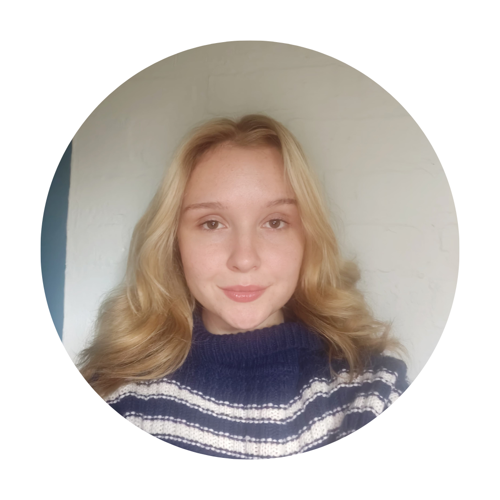

Hi! I'm
Caitlin Calder
Final Year BSc Information Technology Student


Hi! I'm
Final Year BSc Information Technology Student
I'm a final-year student at North-West University, majoring in Artificial Intelligence, Databases, Decision Support Systems, Computer Networks, and Operating Systems. I'm also proud to be an Amazon Bursary Recipient for the year 2025.
💡 I'm currently exploring the exciting world of Artificial Intelligence and Machine Learning, with a passion for building smarter, more intuitive systems. 🤝 I'm actively seeking collaboration, mentorship, and opportunities to gain real-world experience across various spheres of IT—so I can discover where my skills and passions align most effectively. 🛠️ I thrive in project-driven environments and believe in continuous growth through curiosity, innovation, and community.
Whether I’m designing user-friendly applications, simplifying technical concepts, or improving system performance, I approach every challenge with a detail-oriented mindset and a collaborative spirit.
Outside of coding, I love creating and sharing helpful resources, staying ahead with the latest in tech, and encouraging others on their own learning journeys.
Let’s build something impactful together—I'm always open to new ideas and experiences!